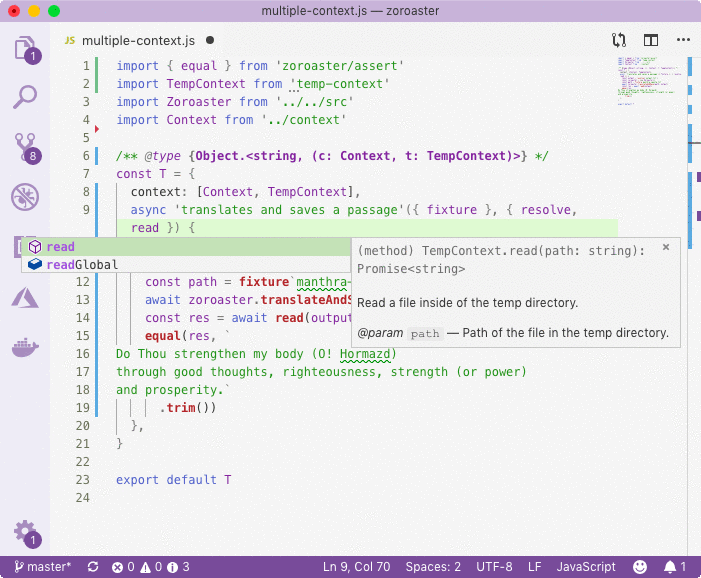

h1 { font-family: 'Mr De Haviland' }
# NodeTools: A Complete Node.JS Development Stack
Every developer needs tools to work with the programming language. For JavaScript and Node.JS, the choice of such tools is usually fairly standard and might consists of things like Babel, TypeScript, Mocha and React. However, the complexity of such tools does not allow to feel in control of the development process as they require installation of thousands of new packages in the `node_modules` directory and make the developer adhere to their mode of work instead of allowing her to just use the language for programming.
_NodeTools_ is the simplest, full stack for developing libraries and binaries in Node.JS that is a complete replacement to the tools that are all over the place. It will only create 10 folders in the `node_modules` directory, the exact purpose of which will be known to the developer. Such advantage allows to initialise packages very quickly, without having to link thousands of dependencies.
Our [Node.JS development company in London](https://www.artd.eco) has created _NodeTools_ for our own use that requires maximum efficiency, productivity and developer experience while developing in Node.JS. We deliver products for the web using JavaScript, as it's the most suitable language for asynchronous operations that take the central stage in web computing, so we created a stack to make sure it's really easy to create and publish new packages, web apps and static websites quickly.
## Automation
The key focus of NodeTools is to reduce the number of repetitive operations to the minimum, while allowing the developer to keep her personal style of programming. We're not trying to tell you how to organise source code, or how to code. We only want to automate those operations that take a large amount of time, and provide tools for the best developer experience.
Packages' modularity is in the core of NPM infrastructure. It's great that everything can be split by package, including simplest functions. But it usually takes time to initialise those packages and repositories for them. It's really time consuming, but not with the package bootstrap from NodeTools. After setting it up locally with your GitHub developer key, you'll be able to generate new packages from our, or your own GitHub templates in a matter of seconds, and use the freed time wisely to produce more amazing code.
_MNP_
## Modern JavaScript
JavaScript is a well-developed, feature-rich expressive language that allows for rapid prototyping, as well as full-scale development process. The Node.JS runtime supports all modern features required to run well-written programs, and the only missing link is support for modules and JSX, so that packages need transpilation. NodeTools respect you as developer and does not dictate how your output code should look like. Instead, we'll simply rename imports into require calls without adding anything else to the output.
Furthermore, transpilation can have another advantage: after your package's source code is built, you want to make sure that it works correctly, by running tests against the build directory instead of the source directory. This is also possible with our transpiler when an environment variable is set to `test-build`. Each import will be seamlessly renamed to point to the correct file in the `build` dir, so that you can be confident that there will be no errors when installing your package. Similarly, this works for `test-compile` as well (see about *compilation* below).
_ÀLaMode_
## Compilation
Traditionally, packages have been transpiled while their dependencies linked dynamically via the `dependencies` field in _package.json_, which means they are pulled when the package is installed. Although possible, static linking was not a standard and required running _WebPack_ on packages, which is more of a web bundling tool. NodeTools for the first time ever allows to properly compile Node.JS packages using Closure Compiler from Google, so that a single, optimised output file is produced where dependencies are linked statically.
Static linking means that the dependencies can be moved into `devDependency` field so that other developers will be more willing to install your package. By reducing the number of dependencies to bare minimum, the installation time increases, and packages look more like finished software products, instead of raw collection of functions put together from other libraries. You still have to do the job of annotation of types and fixing type errors, as the compiler expects code to adhere to certain JSDoc standard.
_Depack_
## Typedefs
The advantage of TypeScript is that it provides the means for auto-completions that are required for great developer experience, and are pretty much a must for a successful package. Maintaining JSDoc has been harder, and other software like VSCode contains bugs that prevent proper working of JSDoc. But in NodeTools, this problem has been approached in a novel way: the type information is kept in XML files where interfaces and types are described. This allows to:
- generate and maintain JSDoc automatically from the single source of truth;
- create externs for the compiler as they are necessary for compilation of packages that are published for external consumption;
- embed type information into documentation in form of tables.
NodeTools is a JavaScript stack. Although some might prefer TypeScript, possibly because of the ease of working with types, JavaScript is more favourable for other people who want to remain true to traditional JS development. With NodeTools, it becomes possible to create professional advanced packages that can scale up easily while their types come from the single source of truth, and enable the _DRY_ (don't repeat yourself) principle during the development process.
_Typal_
## Documentation
Moreover, the standard approach to documentation is to copy the source code and its output into the `README` file. However, such method is not robust because as the code changes, examples might become outdated and obsolete. Also it takes a lot of time to tediously re-run examples and manually cope the result they produce. A much better technique is to compile documentation using documentation engine.
This advanced strategy allows to to keep source documentation split by files in a separate directory, and put it together using a single command. It will let you to save examples in separate files, while embedding them into README automatically, as well as forking them and inserting the output automatically also. As a bonus, you will be able to rename your imports, so that instead of saying `import pckg from '../src'`, examples will say `import pckg from 'pckg'` which is ready to be copied by your users.
On top of that, our documentation tool supports watch mode with automatic push to remote repository, so that any change to docs will almost instantly be uploaded online so that you can see how changes look. There's also support for GitHub wiki pages that are now really easy to maintain, as you can create a submodule in your project, and just compile wiki pages into there.
_Documentary_
## Context Testing
Quality assurance is just as important as the implementation itself. It's not only a process to make sure that code works, but a process that allows for development itself: the tests are the entry point to the program (otherwise, where do you execute the source from?). Therefore, testing must be the area that receive maximum attention from developer tools.
There's a unique approach to testing in NodeTools. Your tests will have a context, that is, a collection of test APIs that can be invoked from test cases. This means you can put all testing utilities required to run specs in a separate file, to be able to keep test suite files nice and organised and be able to create as many test suite files are needed, without being contained by the fact that your testing utilities are scoped within `beforeEach` and `afterEach` blocks. Each test will have a test sandbox which is called a context, and its methods are accessed easily via JSDoc. Context testing provides the perfect environment for bespoke developer experience as you can publish your own contexts and reuse them across packages.

_Zoroaster_